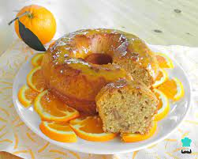

Bolo de Laranja
Receita rápida e prática de um delicioso bolo de laranja
Ingredientes:
4 Ovos
1 xc (chá) de òleo
cascas de laranja
1 colher de sopa de fermento
2 xc (chá) de açúcar
suco de 2 laranjas
2 xc (chá) de farinha de trigo
Modo de preparo:
Tempo médio de preparo: 40 min
Preaqueça o foro por 10 min em temperatura média
Bata no liquidificador os ovos, o açúcar, o óleo, o suco e a casca da laranja
Passe para uma tigela e acrescente a farinha de trigo e o fermento
Leve para assar em uma forma com furo central, untada e enfarinhada, por mais ou menos 30 minutos
Desenforme o bolo e molhe com suco de laranja
